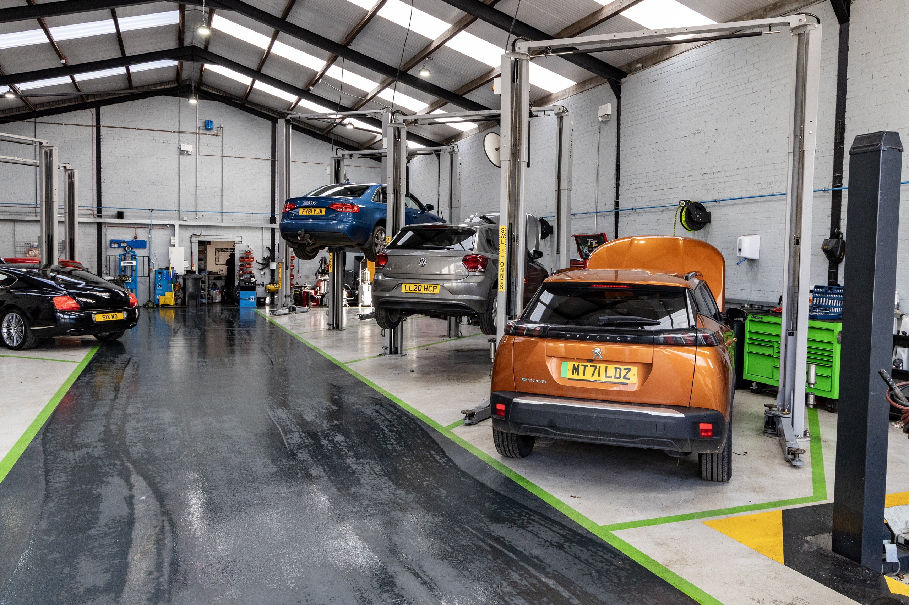
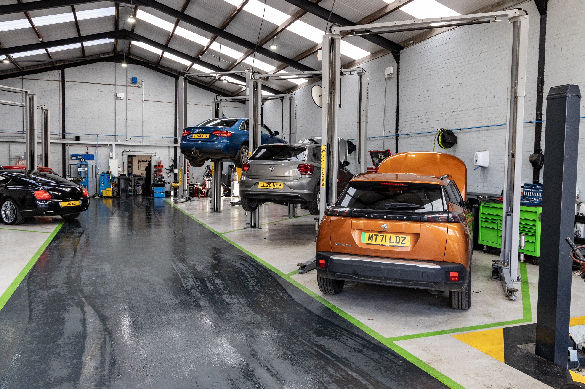

About Us
At City Centre Vehicle Garage, we’ve been servicing vehicles for over a decade with a reputation built on trust, quality, and customer satisfaction. Our garage is located in the heart of the city and equipped with modern tools and technology to handle everything from MOT testing and diagnostics to complex repairs.
With our team of qualified mechanics, we ensure that your car gets back on the road efficiently and safely. Whether you're coming in for a routine check-up or an emergency repair, we're committed to providing top-notch service every time.
Why Choose Us?

Trained Technicians
Certified professionals ensuring top-level care.
Quality Parts & Service
We use only top-grade and premium components.

Customer-First Approach
Friendly service and honest advice.